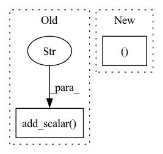

Pattern ID :34252
Before Change
self.logger_fl.info(log_dict_nc(self.out_dict))
self.writer.add_scalar("Train/loss", loss, step)
self.writer.add_scalar("Train/ntp_acc", ntp_acc, step)
self.writer.add_scalar("Train/learning_rate" , lr, step)
else:
self.logger.info(log_dict(logs))
self.logger_fl.info(log_dict_nc(logs))
After Change
should_log = True
self._log(self.out_dict, mode="train", to_console=should_log)
elif "eval_loss" in logs: // `Trainer.is_in_train` is not False so can"t use
loss, ntp_acc = logs["eval_loss"], logs["eval_ntp_acc"]
// Log eval on an epoch-level
// Evaluation finished during training; TODO: didn"t verify other positive cases
n_ep = state.epoch
assert n_ep.is_integer()In pattern: SUPERPATTERN
Frequency: 3
Non-data size: 2
Instances Fragment ID: 98201946
Project Name: stefanheng/symbolic-music-generation
Commit Name: 6f4e76c4da49558977ce2dfd8bddca8531c2894f
Time: 2022-04-10
Author: 43276957+SpongeBobBang@users.noreply.github.com
File Name: musicnlp/util/train.py
M Class Name: ColoredPrinterCallbackForClm
N Class Name: ColoredPrinterCallbackForClm
M Method Name: on_log(5)
N Method Name: on_log(5)
M Parent Class: ColoredPrinterCallback
N Parent Class: ColoredPrinterCallback
M File Name: musicnlp/util/train.py
N File Name: musicnlp/util/train.py
M Start Line: 229
M End Line: 252
N Start Line: 277
N End Line: 306
Before Change
total_loss.backward()
if self.rank == 0:
scalar_total_loss = total_loss.cpu().item() * self.t_config.gradient_accumulation_steps
self.tb_writer.add_scalar("scalar/total_loss" , scalar_total_loss, writer_step)
writer_step += 1
if max_grad_norm > 0:
if self.t_config.fp16:
torch.nn.utils.clip_grad_norm_(amp.master_params(optimizer), max_grad_norm)After Change
if batch_postprocessors is not None:
batch = batch_postprocessors[taskname](batch)
batch_taskname = (batch, taskname)
total_loss, losses_dict = self.train_on_batch(batch_taskname, args)
self.write_loss(total_loss,writer_step,losses_dict)
writer_step += 1 Fragment ID: 98201944
Project Name: airaria/textbrewer
Commit Name: 51c4701a52a04de61cbcd6b1e48d7f1b3f4159e1
Time: 2020-11-08
Author: yangziqing@163.com
File Name: src/textbrewer/distiller_multitask.py
M Class Name: MultiTaskDistiller
N Class Name: MultiTaskDistiller
M Method Name: train(11)
N Method Name: train(11)
M Parent Class: GeneralDistiller
N Parent Class: GeneralDistiller
M File Name: src/textbrewer/distiller_multitask.py
N File Name: src/textbrewer/distiller_multitask.py
M Start Line: 81
M End Line: 103
N Start Line: 81
N End Line: 96
Before Change
logger.debug("Epoch {}".format(epoch))
lr = scheduler.get_lr()[0]
logger.debug("Learning rate = {:.3e}".format(lr))
writer.add_scalar("learning_rate" , lr, n_iter)
n_iter = train(
model=model,
data=train_data,After Change
// Initialize scaler and scaler training labels by subtracting mean and dividing standard deviation (regression only)
if args.dataset_type == "regression":
logger.debug("Fitting scaler")
train_smiles, train_labels = zip(*train_data)
scaler = StandardScaler().fit(train_labels)
train_data = list(zip(train_smiles, scaler.transform(train_labels).tolist()))
else: Fragment ID: 98201941
Project Name: aamini/chemprop
Commit Name: 64f98d60d13bc4bd7131ea4453b03163503cce0c
Time: 2018-10-02
Author: swansonk.14@gmail.com
File Name: train.py
M Class Name: AnonimousClass
N Class Name: AnonimousClass
M Method Name: run_training(1)
N Method Name: run_training(1)
M Parent Class:
N Parent Class:
M File Name: train.py
N File Name: train.py
M Start Line: 59
M End Line: 117
N Start Line: 58
N End Line: 102